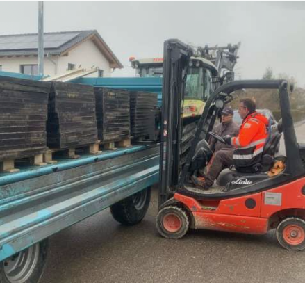
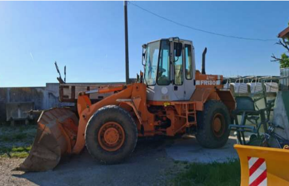
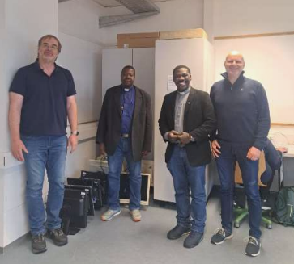

Geplante Projekte (Start 2025)
1. Containerlieferung
Verschicken von Hilfsgütern via Container (PV‑Anlagen, Radlader) aber auch Dinge des täglichen Bedarfs wie Computer und Bildschirme, Fahrräder, Kleidung, Möbel, Kinderbücher u.v.m. Im Prinzip wird fast alles gebraucht.
  2. Hühnerzucht Burkina Faso
Auf einem neuen Grundstück in Ouagadougou soll eine Hühnerzucht für Eierproduktion und Mast entstehen. Es müssen hitzeresistente Hühner gehalten werden. Ein neuer Brunnen ist erforderlich, da der alte bei einem Unwetter zerstört wurde. Parallel ist eine Fischzucht geplant. Gregor, ein vom Norden vertriebener junger Mann, wird hier zum Hühner- und Fischbauern ausgebildet.
3. Landwirtschaft und Brunnen
Um ein Kloster stehen Ländereien, deren Landwirtschaft mit einem neuen Traktor wieder betrieben werden könnte. Zusätzlich ist der Bau eines „Josephsbrunnen“ in Uganda geplant, um ein Kindergarten- und Hospitalprojekt zuverlässig mit Wasser zu versorgen.
4. Gästezimmer in Fort Portal (Uganda)
Begleitend zum Kirchenbau sollen drei Gästezimmer entstehen. Dort können Ärzte, Lehrer und Bauarbeiter untergebracht werden, die mehrere Wochen in Uganda helfen. Außerhalb der Einsätze kann die Kirchengemeinde die Zimmer nutzen oder vermieten, um Einnahmen zu generieren.
5. Priesterpatenschaften
Mit 50 Euro pro Monat kann ein Priesterstudium in Afrika finanziert werden. Interessierte können eine (auch anteilige) Patenschaft übernehmen und junge Männer auf ihrem Weg persönlich begleiten.
Weitere Projekte für 2026
- Nigeria – Zusammenarbeit mit Saatgutherstellern
- Nigeria – Handel mit Ersatzteilen und Computern
- Nigeria – Bau/Vermietung eines Mehrfamilienhauses
- Uganda – Ausbau von Schulen, Weiterbau eines Kindergartens
- Burkina Faso – Weiterentwicklung einer Krankenstation